Artist
Raziyeh Poursalary
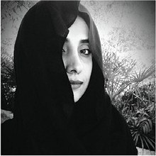
- Born1980
- NationalityIranian
- Works20
- Dated2009–2014
StatementAbout the work
It is a narrative of parallel worlds with span forms giving birth continuously in an unknown time and place.
Light lines which are similar to energy ropes, the ropes which shape the base of existence. (Mentions to the ropes theory)
Today, the continuous spinning and converting of the forms from one status to another one is my matter. And it is a story of a passing moment which there is no stability of time in it.
Works20 artworks


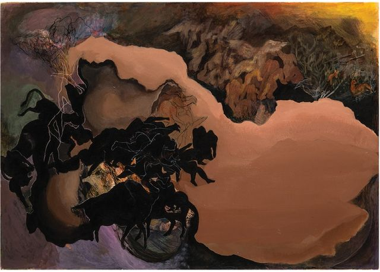

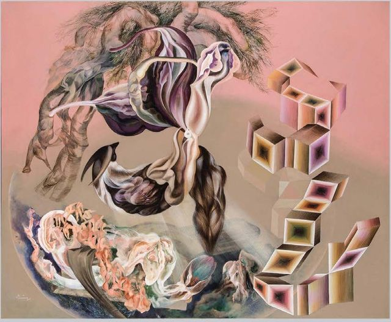

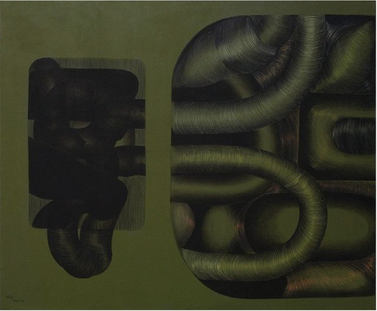

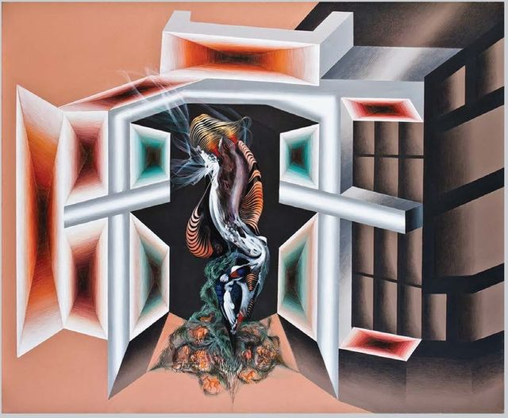

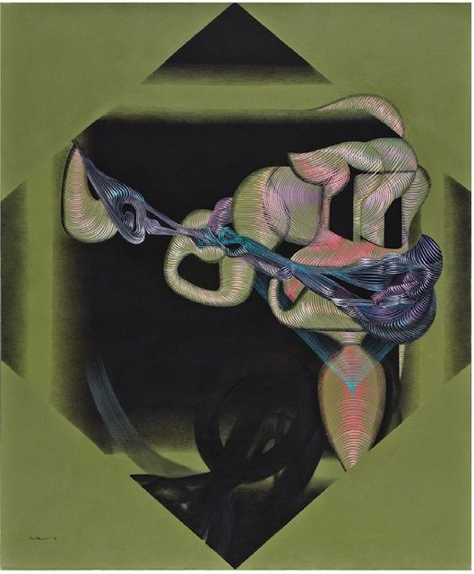

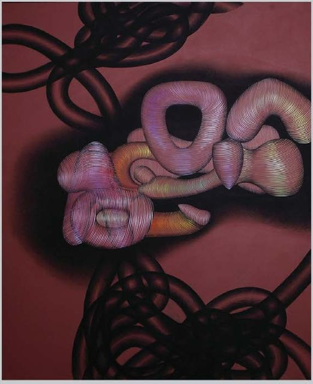

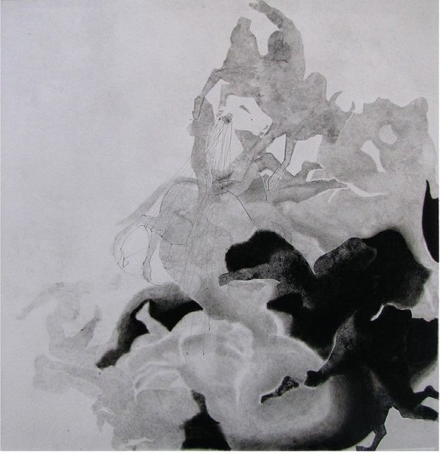

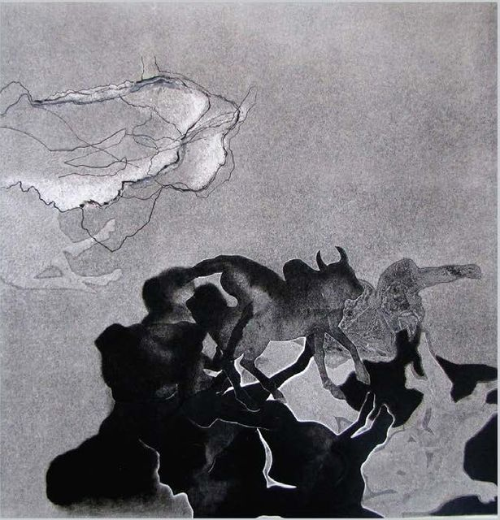

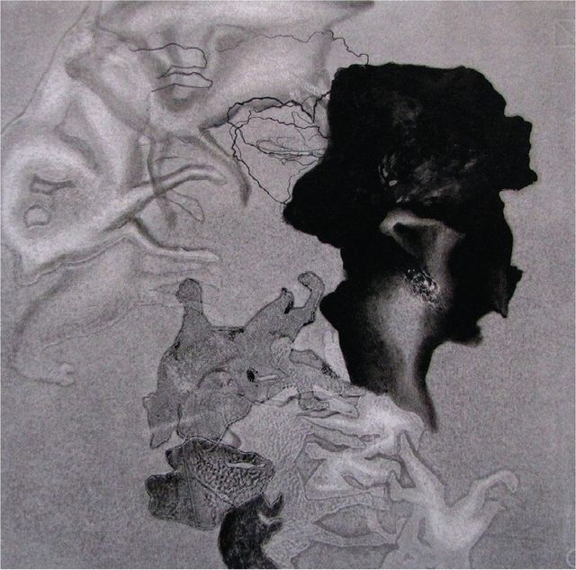

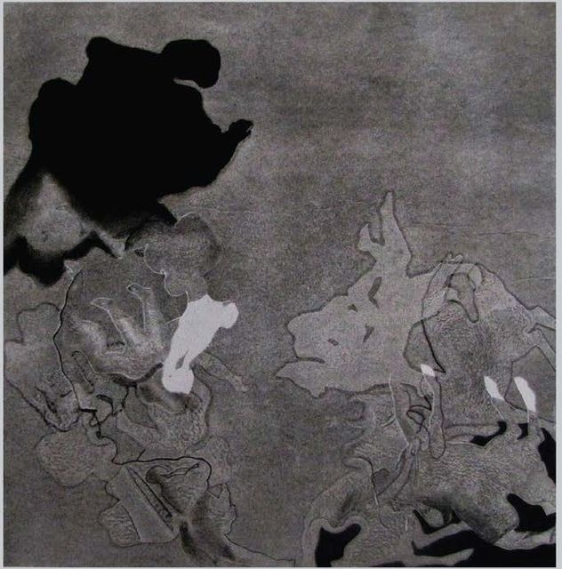

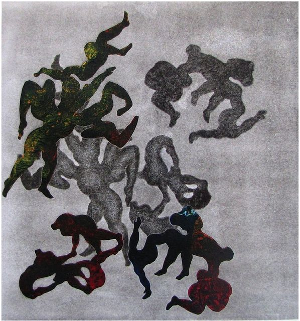

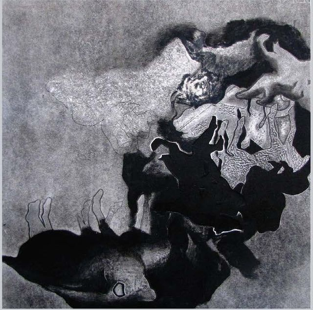

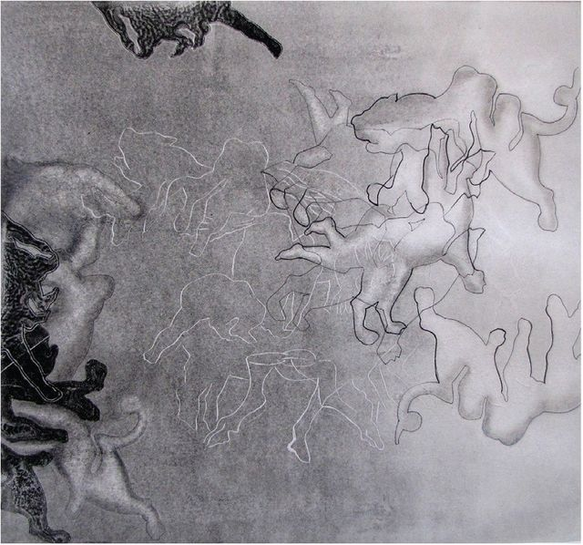

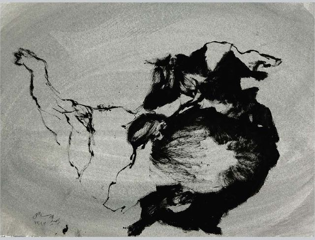

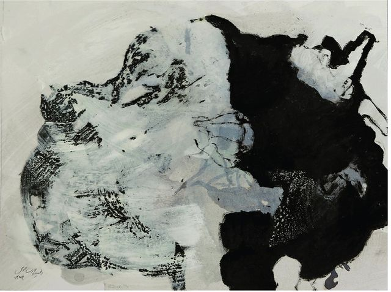

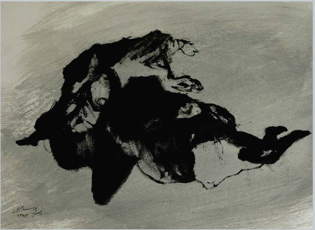

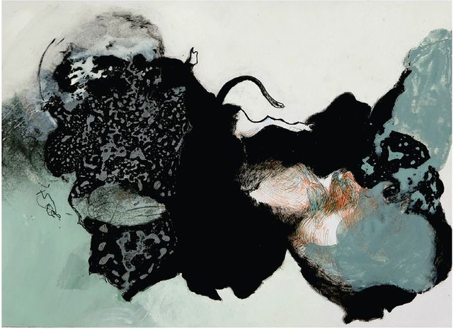

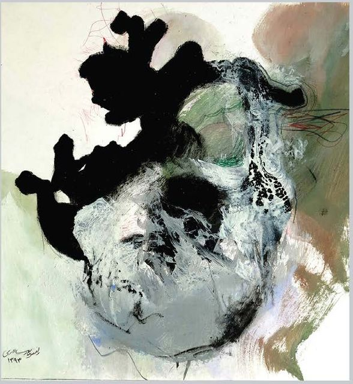

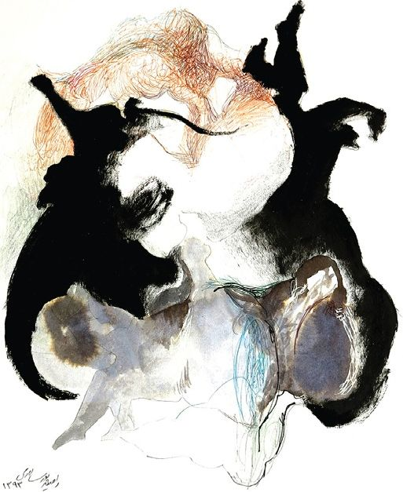
History of experienceBiography · education · exhibitions · awards
Education background
- 2004–2009Attended painting classes instructed by the international artist Pooya Aryanpour
- 1998–2002BA (Hons) Art & painting, Azad university|Tehran – Iran
- 1994–1998Diploma in Art, Plastic art school|Tehran – Iran
Solo exhibition
- 2015Aun Gallery|Tehran – Iran
- 2011Aun Gallery|Tehran – Iran
- 2009Day Art Gallery|Tehran – Iran
- 2008Day Art Gallery|Tehran – Iran
Group exhibitions
- 2012The view from my window, Rira art gallery|Dubi-UAE
- 2011"From past to... Tomorrw", Day Art Gallery|Tehran – Iran
- 2010Haft Negah, Mellat Art Gallery|Tehran – Iran
- 2009Masques of Shahrzad, Mall Gallery|London
- 2009"From past to ... Tomorrow", Day Art Gallery|Tehran – Iran
- 2008Day Art Gallery|Tehran – Iran
- 2008Dar al funoon Gallery|Kuwait
- 2007The Color of love, Niavaran Cultural Center|Tehran – Iran
- 2002Jahannama Art Gallery|Tehran – Iran
- 2001Afrand Art Gallery|Tehran – Iran
- 1995Aftab Art Gallery|Tehran – Iran
- 1994Plastic Art School|Tehran – Iran
Source: the Sobhan Gallery artist catalogue “Razieh Poursalari.pdf”.